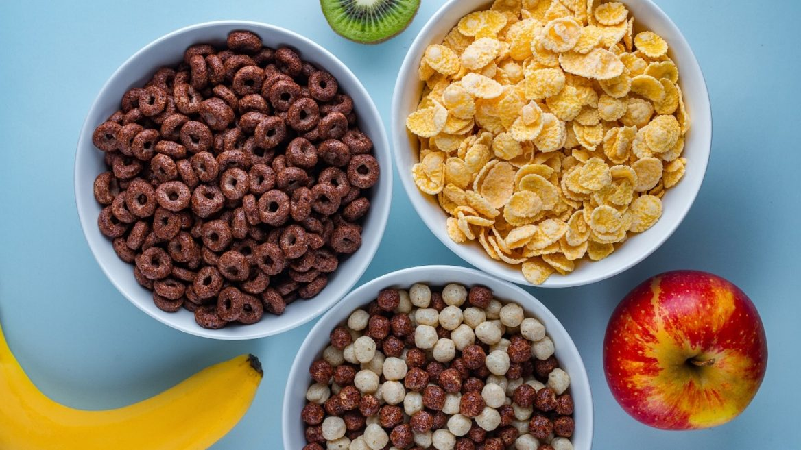

CORPORATE LIES: BREAKFAST WINS, YOUR HEALTH LOSES
How we were tricked into eating when we should have been fasting

Have you ever forced-down breakfast at 6am when you weren’t even hungry?
Did you do it because “You needed it to fuel your day”?
Or because you know you’ll be hungry later?
The irony of these reasons is that doing so makes you even hungrier… and sets you up for a sluggish afternoon.
In the information age that we live in, it would be impossible to convince people that a bowl of highly processed carbs, powdered synthetic vitamins, and carcinogenic preservatives is a great way to start their day…
But before the age of the internet; that’s exactly what the breakfast industry succeeded in doing…
Making cereal number #4 source of added sugar in US diets – behind soft drinks, desserts, and candy.
Thanks to decades worth of successful PR… industry sponsored ‘studies’, strategic astroturfing, paid-for doctors and manipulative child psychology; we have embraced the ‘importance of breakfast’ as a common ‘fact’.
Paid-for doctors and dietitians are hosted on morning shows telling us that skipping breakfast “will slow our metabolism – causing our body to hold onto fat”.
Or; “If you skip breakfast, your body goes into ‘starvation mode’ and ‘holds onto the fat’ rather than burning it”.
Other ‘experts’ spread these false truths without verifying the facts for themselves – such as celebrity chefs endorsing a new breakfast recipe with phrases like “start your day the healthy way”.
Cereal companies then hedge their bets by branding their boxes to children with fun characters that offer a bribe of some kind like a collectable card or a small toy. Then carefully placing their ads in between morning cartoon shows.
Our belief in the importance of breakfast is so deeply rooted… that to question its validity would be blasphemous.
But when you look past the ‘research’ that has been sponsored by the industry that promotes breakfast… the you’ll find that their results are either ‘cherry picked’ or outright false.
The Word ‘Breakfast’ Literally Means: “To Break Your Fast”
Because your body goes without food from last evenings dinner to the next day; this 12 – 14 hour period is called a ‘fast’. So when you eat the following morning you’re ‘breaking your fast’ – breakfast.
Break Your Fast Later – Intermittent Fasting
Intermittent fasting involves skipping breakfast and going as long as you can until your first meal.
In total, a intermittent fasting usually ends up being between 16 and 18 hours.
So, if you eat dinner the night before at 6pm and don’t break your fast until 10am… you’ve fasted for 16 hours. If you can refrain from eating until 12 noon, you’ve fasted for 18 hours… and so on.
Studies reveal that intermittent fasting has immense health benefits. With a typical intermittent fast lasting up until lunchtime, this gives your body up to 18 hours (or more) to detox and regenerate.
The Benefits Of Fasting & Intermittent Fasting Are Extensive.
Detoxifying – Periods of fasting stimulate cells to cannibalize. This process, known as autophagy is the body’s natural ability to clean out detox and recycle cells that are no longer functioning properly.
Promotes Human Growth Hormones/Stem Cells – Fasting is a great stimulus to HGH secretion. During fasting, there is the spike in the early morning, but there is regular secretion throughout the day as well.
https://www.ncbi.nlm.nih.gov/pmc/articles/PMC4102383/
Regenerates The Microbiome, And ‘Weeds Out’ Bad Bacteria In The Gut – A healthy microbiome is a 2-4 pound cluster of good bacteria living in your gut.
Only recently, have scientists begun to realize how important this cluster of beneficial bacteria actually is.
The medical community now recognizes the microbiome as a vital organ because it’s responsible for maintaining a long list of important body functions…
Unfortunately, modern living slowly kills off the beneficial bacteria in your gut. And the space left behind gets taken up by bad bacteria.
Bad bacteria don’t benefit the body in any way… it simply grows like weeds and prevents the good bacteria from doing its job properly.
Since the microbiome helps regulate the metabolism, a common symptom of a bad bacteria gut overgrowth is unshakable weight gain…
Other symptoms include a long list of digestion related illnesses such as: acid reflux, bloating, IBS and leaky gut to name a few…
A common misconception is to take a probiotic supplement… but since the gut is overgrown with bad bacteria, there is no room for the good bacteria to colonize… so it simply passes through your system.
Fasting is one of few options that will clear out a bad bacteria gut overgrowth.
Bad bacteria need to feed often to maintain their growth. Periods of fasting cause bad bacteria to die off quickly… giving your microbiome a chance to thrive again.
If you’re experiencing the symptoms of a bad bacteria overgrowth, but can’t bear fasting… check out this easy ‘cheats option‘.
Heart Health And Optimum Blood Pressure – Studies reveal reduced systolic blood pressure by three to eight per cent, and diastolic blood pressure by six to ten per cent.
Accelerated Healing – Intermittent fasting acts to turn on certain genetic repair mechanisms that enhance cellular rejuvenation. This adaptation appears to allow certain cells to have a longer lifespan during times of famine.
Boosted Metabolism, Restored Insulin Sensitivity – Especially when paired with ketogenic diet.
Healthier Skin – Research indicates that short term fasting may inhibit certain skin conditions and detoxify skin impurities.
Diseases and illnesses fasting has been proven to treat
- Epilepsy
- Mental health for the elderly
- Aides chemotherapy
- Treats Pancreatitis
- Significantly Improves Asthma
- Heals oxidative stress/Inflammation
- Digestion related illnesses
- Premature aging
- High blood pressure
- Obesity
- Type 2 diabetes
- Neurological diseases
- Plus a lot more!
Inflammation is the root cause of a vast array of illnesses. Among others; If the name of the disease has ‘itis’ on the end of it such as; arthritis, bronchitis, sinusitus, tonsilitis etc – it means it is an inflammatory disease.
Fasting relieves inflammation… which means all these ‘itis’ diseases can be treated naturally.
Is your body on the verge of ‘crashing’?
Have you ever overloaded your computer to the point of crashing? Your body responds in a similar way…
Think of unhealthy living in the same way your computer performs when it has been abused (too many tabs open, hasn’t been shut down in weeks, downloads from pirate websites).
Fasting lets your body ‘refresh’, ‘reboot’ and ‘update’ and ‘scan for viruses’… giving your body the time an energy it needs to do tasks it was unable to perform when it was overloaded.
The longer you give your body to refresh, reboot and update (fast); the better it will perform.
The point of this example is to illustrate the difference between eating less and actual fasting. Your computer can only refresh, reboot and update properly when you’re not burdening it with tasks (eating).
Eating two meals instead of three will lengthen your life and slow aging
Research reveals that reducing energy consumption by 30 to 40 percent can extend a person’s life span by a third or more. Fasting also reduces oxidative stress and slows the aging process.
A recent study in Sweden showed that a high body-mass index and high levels of total food consumption and energy intake were risk factors for prostate cancer. Data also suggested, that caloric intake is directly correlated with the incidence of colon, rectal, breast, and stomach cancers.
Other benefits of fasting
Meditation Becomes Easier – According to yogi master Swami Satyananda Saraswati: “Fasting reduces the tamasic element in the body. Tamas is the greatest obstacle to meditation. While fasting, we shed extra weight from the body and gain strength and clarity of mind. This is important. We cannot progress in meditation with a fat body and a weak mind”.
Fasting Is Widely Used In Traditional Chinese Medicine – The purpose of fasting in Chinese medicine is to address stagnation, as stagnation prevents energy and blood circulating in the body. It mainly starts from food. According to TCM theory; illness occurs because the body is out of balance.
What sets Eastern fasting practice apart from Western fasting is that it’s always practised with some form of meditation combined with breathing exercises.
What you can consume during a fast
Water, Black coffee, Unsweetened tea.
Some health professionals recommend ‘juice fasts’ or ‘fat fasts’ or ‘cabbage soup fasts’. But unless explicitly told to do so by your doctor; a successful fast consists of limiting yourself from consuming anything that triggers a metabolic response.
Everybody is different
Fasting isn’t for everyone. Some people wake up ‘starving’. And no matter how hard they try; they crave an early breakfast. That’s fine.
But some of us think they cant live without breakfast – but become accustom to fasting with a little practice.
Who shouldn’t fast?
Despite the benefits; fasting can be dangerous for certain medical conditions.
It is not recommended for people already suffering from malnutrition, diabetes, and chronic ailments like cardiac arrhythmia, advanced stages of cancer, or gout. If you suffer from these ailments; seek medical advice first.
Fasting is not advised for pregnant women.
Unless fasting has been otherwise prescribed by a doctor; children and teens shouldn’t fast. Growing bodies need the extra nutrition and energy intake.
Westerners need to feel hungry more often
Feast and famine is the eating pattern that our ancestors lived-by… Unlike the 24/7 non-stop eating habits westerners are guilty of today.
Our bodies are designed to have extended periods without eating. Nature intended to use that time to burn excess fat and detoxify.
Its easier than you think to adapt to cutting out a morning meal.
Begin with stalling breakfast as long as you can until you get used to eating your first meal of the day at lunch.
Before you know it; you’ll be saving yourself from 30 meals a month and feeling healthier and younger than you ever dreamed.
The Diet That Goes Hand-In-Hand With Intermittent Fasting
Yes, you were lied-to about breakfast. But you’ve also been lied-to about your diet.
==> Click here to check out my previous article on the controversial diet that should be followed in-between fasting. You’ll be shocked to learn that the ‘food pyramid’ we were taught in school – is actually upside down!
If you’ve already heard how incredibly effective the keto diet is, but don’t know where to start…
The 28-Day Keto Challenge is a delicious, well-crafted meal plan that guides users through their first month of the Keto diet.
You are never left to figure things out on their own… The 28-Day Meal Plan leads you every step of the way!
PLUS you’ll also receive 10 expert guides to educate you on the Keto lifestyle.
It’s guaranteed to work! check out the long list of testimonials!